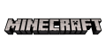
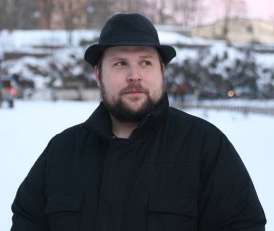
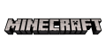
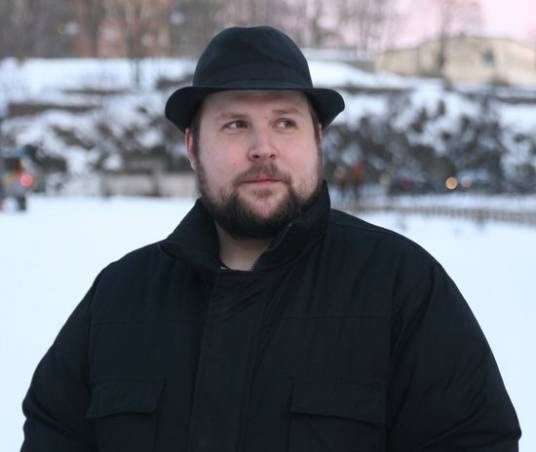

Minecraft（《我的世界》）
是一款3D沙盒电子游戏，
Notch最初于2009年5月17日发布了游戏的Classic版本。
玩家可无拘无束地与由方块、实体构成的3个维度环境互动。
它提供多种玩法供玩家选择，带来无限可能。
目前Minecraft可分为Java版、基岩版和教育版。
自Minecraft发布以来，赢得了众多奖项。其中包括：
PC Gamer的“年度游戏”
独立游戏大会的大奖及“最受观众欢迎奖”
2010年Good Game的“最值得下载游戏”
Rock Paper Shotgun的“年度游戏”
Indie DB的“年度独立游戏”、“最具创新及最佳单人独立游戏奖”
游戏开发者选择奖的“最佳首次亮相游戏”
“最值得下载游戏”以及“最具创新性游戏奖”
 



Markus Alexej Persson(Notch)